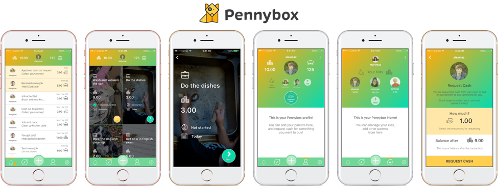
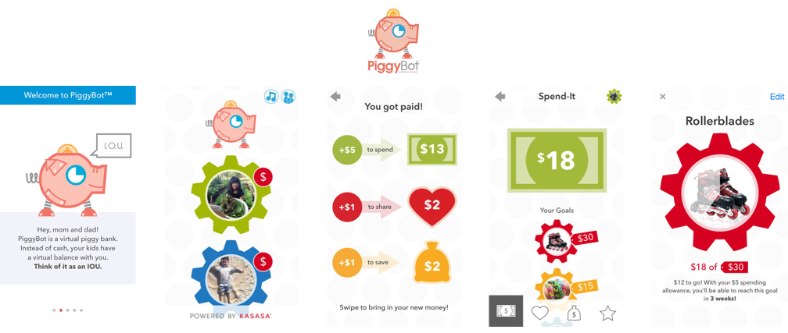
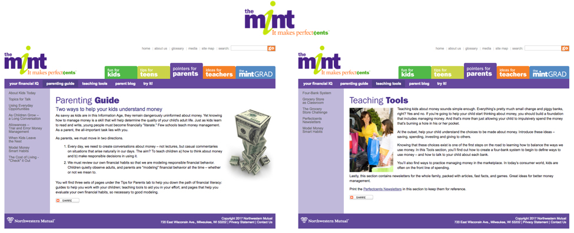

Personal Finance Education
A system that helps parents better educate their children about personal finance.
Overview
Objective
The tool aims to help emerging adults better evaluate their purchase decisions and form a habit of budgeting. The tool aims to help emerging adults better evaluate their purchase decisions and form a habit of budgeting. The tool aims to help emerging adults better evaluate their purchase decisions and form a habit of budgeting. The tool aims to help emerging adults better evaluate their purchase decisions and form a habit of budgeting.
My Role
UX Designer, UX Researcher
Timeline
Sept. 2017 - Dec. 2017
Team Members
Tony Jin, Michelle Ma, Jason Paul, Sijia Xiao
Tools
Sketch
Methods
As a team of four, we first conducted user research (surveys, semi-structured interviews, literature review & competitive analysis) and analyzed our qualitative data using affinity mapping. After understanding our users' needs, we brainstormed and generated four different concepts approaching the problem from different angles. We then evaluated our ideas based on the feedback we got from potential users and classmates, before implementing the prototype of xxxxx idea.
My Contribution
During the research phase, I conducted a literature review on personal finance education. In addition to contributing to the survey draft and the interview guide, I was in charge of contacting survey respondents for further interviews. I also conducted semi-structured interviews with potential users and financial experts. During the ideation phase, my ideas of providing in-context feedback, visualizing one's future financial status and co-planning a major family spending were all modified and developed into our four final concepts.
Process
Literature Review
To understand the current problems American youths are facing while learning about personal finance, we looked into the research literature. While most studies focused on evaluating the success of personal finance education curriculum in schools, data show that most children actually turn to their parents for advice when facing financial decision problems. The results motivated us to focus on parents in our following surveys and interviews to learn about their barriers when it comes to educating the youth about personal finance.
Competitive Analysis
We also investigated the existing solutions used by parents who consider it significant to educate their children about financial literacy. We analyzed three products including an interactive website and two highly ranked education App from the iOS App Store/Google Play Store.
Pennybox aims to improve financial literacy by having children interact with their parents on a daily basis about money. The app has parents list chores on the app and attach dollar values to them, with children then completing the tasks and collecting the money into their Pennybox account. Like any bank account, children can then track how much they have saved, how much they have spent, and how much more they can earn. Children can also request a cash out, which parents can accept or decline. The tool is great for younger children to learn about what it means to earn money through working and save it; however, these concepts are too basic for teenagers who will soon need to manage a household and face real-world financial problems.
PiggyBot is an iPhone and iPad app that works as both an electronic piggy bank and allowance tracker. It introduces children to the concept that managing money should have three parts: spending, sharing with others, and saving. It lets children set goals and take photos of those goals; it then shows them weekly how they are doing in terms of reaching their goals. This app permits parents to set up profiles for multiple children and keeps all the record-keeping in one place. However, like Pennybox, the app can be over-childish for teenagers and cannot be used to educate them about more complicated financial concepts.
The Mint provides learning materials for younger children, teenagers, parents and teachers on a variety of topics including earning, saving, owing, tracking, giving and investing. It provides quizzes and interactive games to teach basic financial concepts and give children/teens some hands on practice in the virtual environment. However, the website is text-heavy and mostly non-interactive; the games only enable children/teens to practice basic activities like how to write a check, which are not interesting enough to keep them motivated.

Through competitive analysis, we discovered that most of the existing products are either interactive but simple, which work fine only with younger children, or informative but static, which can hardly draw children's interests. Few products target late adolescents, who are not yet motivated to learn about complicated financial concepts, but will soon need them as they start working or enter college. Therefore, we decided to help parents of late adolescents educate their children about personal finance.
Surveys
Because of our limited timeframe, we decided to deploy a survey as the first step of our primary research, because it is the fastest way to get a wide range of responses. From the survey, we hoped to understand whether parents believe it is important to educate their children about personal finance, what financial concepts parents hope their children learn before leaving home, whether they have attempted to educate their children about these concepts, and whether the process has been successful or not.
Our main findings from the surveys are as follows: (Observations here regarding "children" apply to teenage children at different ages)
- Budgeting, staying out of debt, and price vs. value (knowing the difference between the value and the price of something) are the top three concepts that parents want their children to learn before leaving home.
- Managing one's own financial resources seems to be a distant topic for children before college.
- Children usually lack interests in learning about financial knowledge.
- Children in their early adolescence cannot understand certain personal finance knowledge.
- Parents lack tools in educating their children about personal finance.
These results lead us to design tools that will:
- Motivate children to learn about concepts that parents believe are the most important: budgeting, staying out of debt, and price vs. value.
- Bring distant financial concepts closer to children to stimulate their interests in personal finance.
Interviews
We conducted several semi-structured interviews with parents and financial experts to dive deeper into the problems parents encounter when educating their children about personal finance and gain advice from experts in personal finance.
Ideation
Design Alternatives